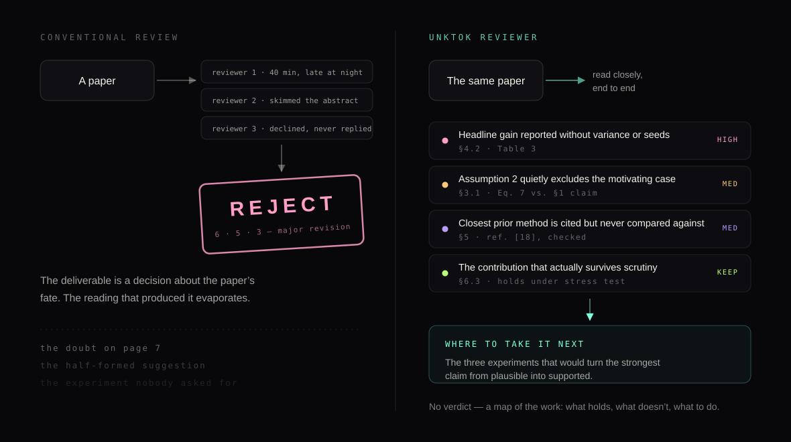
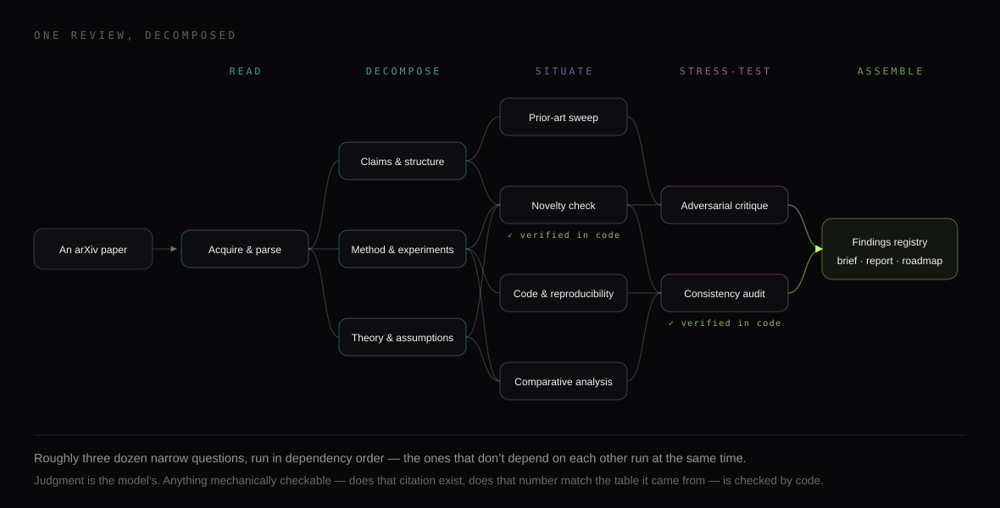
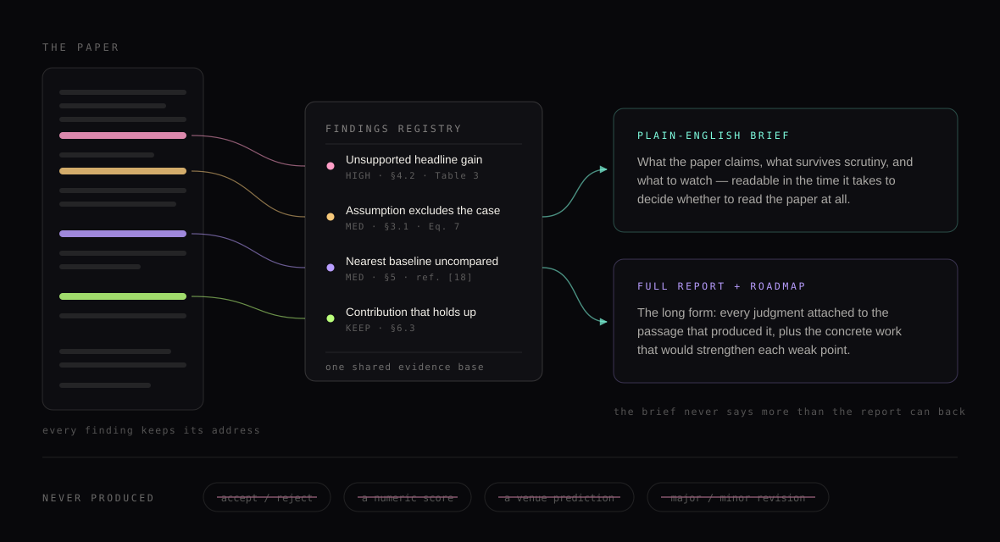
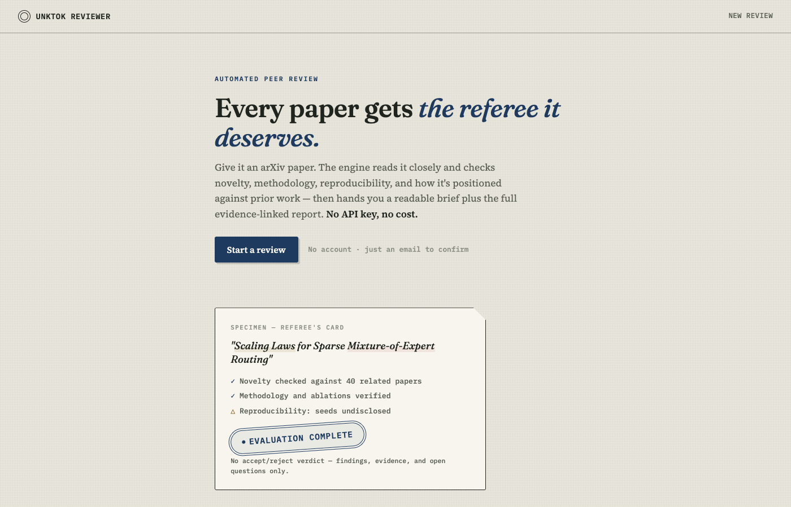

Most research is never actually read
Peer review is how science decides what to take seriously, and it runs on a resource nobody is paid for: the hours a busy researcher spends reading someone else’s work carefully. That resource does not scale with the volume of research, and the volume of research keeps growing. The well-known consequences are the ones people argue about — weak work gets through, good work gets bounced, decisions look like a lottery. The quieter consequence is larger. Most research output never enters the queue at all. Preprints that were never submitted anywhere, negative results, work from outside the circles that get invited to review, the revised version nobody looked at again: in practice, nobody ever reads them closely enough to say anything useful about them.
And when a review does happen, it happens once, months late, and is addressed to an editor rather than to the author. The scarce thing was never judgment — opinions about papers are abundant. The scarce thing was careful reading time, and every strange feature of the system follows from rationing it.
The verdict was never the useful part
Ask an author which part of a review they actually used, and it is almost never the recommendation. It is the one paragraph where a reviewer noticed that the headline number came from a table with no variance in it, or that Assumption 2 quietly excludes the very case the introduction motivates. Accept/reject exists because review was pressed into service as a gate. Once you are not operating a gate, the label carries no information the author can act on — and it actively crowds out the part that can, because everyone reads the score first and the reasoning second, if at all.
So Unktok Reviewer does not issue one. Not “usually doesn’t”: the engine’s editorial policy forbids accept/reject recommendations, numeric reviewer scores, venue predictions, and major/minor revision labels, and the verdict labels are checked for mechanically before anything ships, so a report carrying one does not go out. What it returns instead is a registry of findings: what the paper contributes, what is under-supported or unclear, where exactly the evidence stops, and what work would close each gap.

A review is not one judgment. It’s a few dozen small ones
What separates a referee report you remember from one you delete is not the quality of its overall opinion. It is a series of specific acts of reading: tracing a claim back to the table it rests on, noticing an assumption that contradicts the framing, recalling a two-year-old paper that did nearly the same thing and asking why it isn’t compared against. Those are different skills, applied to different parts of the paper, and they depend on each other in a particular order — you cannot assess a novelty claim before you have gone and found what the prior work actually is.
So the engine does not “review the paper” in one pass. A review is decomposed into roughly three dozen narrow questions arranged in a dependency graph. Parse the paper and extract what it claims. Examine the methods, the experiments, and the theory as separate problems. Go out and find the prior work, then test the novelty claim against what was actually found rather than against what the paper asserts. Look for the repository. Compare. Then attack the conclusions on purpose, before writing them down, to see which ones survive being argued with.
The internals are ours to keep, but the design principle behind them is worth saying out loud, because it is the difference between a review and a convincing imitation of one: judgment is the model’s job, verification is code’s. Whether a cited paper exists, whether a number in the prose matches the table it came from, whether every finding carries a location you can turn to — all of that is mechanically checkable, so it is checked mechanically, not asserted fluently. Language models are very good at producing text shaped like a careful review. The engineering that matters is the part that refuses to let shaped-like-a-review out the door.

What comes back
Two documents, built from one evidence base. A plain-English brief, readable in about the time it takes to decide whether the paper is worth your afternoon: what it claims, what holds up, what to watch. And the full report, where every judgment is attached to the passage that produced it, alongside a registry of findings ranked by severity and a roadmap of the concrete work that would strengthen each weak point. The brief is not allowed to say more than the report can back — it is a projection of the same findings, not a second opinion written in a friendlier tone.
It also tells you what it could not do. If a reference was paywalled, if no code was published, if a claim can only be settled by an experiment it has no way to run, that is written down as an unresolved question rather than smoothed over. A review that conceals its own gaps is worse than no review, because it spends credibility it hasn’t earned.

It’s free, and it’s running now
Unktok Reviewer is live and costs nothing to use. You give it an email address and click the link it sends — no password, no account to manage. You paste an arXiv URL. A few hours later the finished review arrives in your inbox: the brief, the full report, and a download of everything the engine produced. There is no API key to supply and nothing is billed to you; reviews are queued and run one at a time, so during a busy stretch yours may wait its turn, and you never need to keep the page open.
One deliberate limitation: the public service never executes code from a paper’s repository. The engine can, in principle, try to run an author’s code to see whether the results reproduce — but a service that any anonymous visitor can point at any repository has no business doing that. Reproducibility is assessed by reading what is published, and the report says plainly that it stopped short of running anything.

What it isn’t
It is not a certification, and a review from it is not a stamp you can put on your paper. It does not know your subfield’s unwritten context — which baselines everyone privately considers broken, which framing will read as overclaiming to the six people who care most. It is better at “this claim is not supported by the evidence shown” than at “this matters,” and importance is most of what a good human referee brings. And it can be wrong with complete composure, which is exactly why every finding is required to carry the location it came from: so you can check it in ten seconds rather than take its word.
Which is the honest reason it is free and public. We want papers run through it by people who know their own work better than any reviewer does, and we want to hear where it misread them. That feedback is the actual experiment; the service is the apparatus.
Why we’re running this
Papers, peer review, notebooks, journals — these are mechanisms, not laws of nature. Each of them was shaped around what was expensive when it was invented, and careful reading has been expensive for as long as science has existed. Review got rationed to work that had entered a queue; it got compressed into a verdict, because a gate only needs one bit; it got scheduled once per paper, because nobody could afford twice.
If close reading becomes abundant, every one of those constraints comes loose at the same time. Review could attach to preprints instead of submissions. It could be continuous rather than a single event. It could be addressed to the author instead of to an editor. It could happen for the ninety-odd percent of research that currently gets none. We don’t know which of those turn out to be good ideas — abundance creates its own failure modes, and a flood of automated reviews nobody trusts would be worse than the shortage we have. That is a question to settle by building the thing and watching what happens, which is the same wager as our last note: the interesting move is not automating the current mechanism, but finding out what the mechanism could become.
Send it a paper — yours, or one you have been meaning to read properly — and tell us what it got right and where it went wrong. Notes to shiro.takagi@unktok.com.